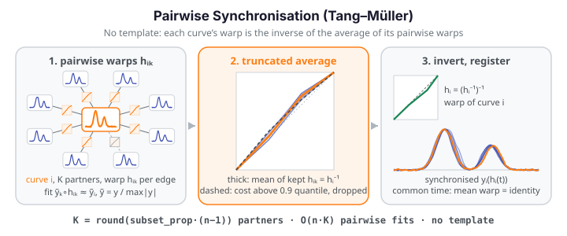

Pairwise Synchronisation¶
Every other group aligner in fdars registers curves to a template: the cross-sectional mean, the Karcher mean, a landmark target. When the sample is heterogeneous or noisy, that template can be a poor reference, and errors in it propagate to every warp. Tang & Müller (2008) proposed a template-free alternative: estimate a warp between pairs of curves, which only requires the two curves to be comparable with each other, and obtain each curve's warp to the common time scale by averaging its pairwise warps.
pairwise_synchronization implements this method (R fdapace::WFDA).

Each curve's warp inverts the truncated mean of its pairwise warps; no template is needed.
How it works¶
For each curve \(i\):
- Partners. Draw \(K = \operatorname{round}(\text{subset\_prop}\cdot(n-1))\) partner curves at random (seeded with
seed + i). -
Pairwise warps. For each partner \(k\), fit a monotone piecewise-linear warp \(h_{ik}\) with
nknotsequally spaced interior knots such that \(\tilde y_k \circ h_{ik} \approx \tilde y_i\):\[ \min_{h_{ik}} \sum_j \bigl(\tilde y_k(h_{ik}(w_j)) - \tilde y_i(w_j)\bigr)^2 + \lambda \sum_j \bigl(h_{ik}(w_j) - w_j\bigr)^2 , \]where \(\tilde y = y / \max\lvert y\rvert\) is the curve normalised by its maximum absolute value and \(w\) is the grid mapped to \([0, 1]\). The second term keeps pairwise warps near the identity; with
lambda_=None, \(\lambda\) is fdapace's data-driven value \(10^{-4}\sqrt{\sum_i\int(\tilde y_i - \bar{\tilde y})^2/(n-1)}\). The knot heights are optimised by box-constrained Nelder–Mead with restarts (fdapace uses BOBYQA). 3. Average. The average of the pairwise warps estimates \(h_i^{-1}\): withchoice="truncated"(default) partners whose fit cost exceeds thetruncation_quantile(0.9) of the costs are dropped and the rest averaged; withchoice="weighted"all partners are averaged with weights inversely proportional to their costs. 4. Invert. \(h_i\) is the inverse of that average, and the synchronised curve is \(y_i \circ h_i\).
Why does averaging work? If curve \(i\) runs on its own clock \(h_i\), the pairwise warp to partner \(k\) is roughly \(h_k \circ h_i^{-1}\). Averaging over many partners averages out the partners' clocks, and the common time scale is defined as the one in which the average warp is the identity. No template is ever estimated.
The result holds warps \(h_i\) (registered curve \(y_i(h_i(t))\), same convention as the other aligners), inverse_warps, the synchronised curves aligned, the per-curve costs, the lambda used, and the raw partners, pairwise_warps and pairwise_costs. All warps are on the argvals scale.
Example: robustness to noise¶
Twenty curves are two-bump functions, each warped by a random piecewise-linear warp through two knots, plus white noise of increasing size. The table reports the error of the estimated registering warps (mean absolute, \(\times 10^{-3}\), after removing the common part, averaged over three samples) for pairwise synchronisation and for the elastic Karcher mean on raw curves, on pre-smoothed curves, and on pre-smoothed curves with a warp penalty:
import numpy as np
from fdars import alignment as A
def simulate(seed, noise, n=20, m=101):
rng = np.random.default_rng(seed)
t = np.linspace(0, 1, m)
mu = lambda s: np.exp(-(s - 0.33) ** 2 / 0.006) + 0.6 * np.exp(-(s - 0.67) ** 2 / 0.006)
X, H = [], []
for _ in range(n):
knots = np.sort(rng.uniform(0.2, 0.8, 2))
heights = np.sort(np.clip(knots + rng.uniform(-0.08, 0.08, 2), 0.05, 0.95))
w = np.interp(t, [0, *knots, 1], [0, *heights, 1]) # piecewise-linear data warp
X.append(mu(w) + noise * rng.standard_normal(m))
H.append(np.interp(t, w, t)) # true registering warp
return t, np.array(X), np.array(H)
print("noise sd pairwise Karcher Karcher (smoothed) Karcher (smoothed, lambda=0.05)")
for noise in (0.02, 0.1, 0.2):
errs = []
for seed in range(3):
t, X, H = simulate(seed, noise)
inner = (t > 0.1) & (t < 0.9)
err = lambda W: 1000 * np.abs(((W - W.mean(0)) - (H - H.mean(0)))[:, inner]).mean()
Xs = np.asarray(A.srsf_presmooth(X, t, smoothing="box", passes=25))
errs.append([err(np.asarray(A.pairwise_synchronization(X, t)["warps"])),
err(np.asarray(A.karcher_mean(X, t)["gammas"])),
err(np.asarray(A.karcher_mean(Xs, t)["gammas"])),
err(np.asarray(A.karcher_mean(Xs, t, lambda_=0.05)["gammas"]))])
e = np.mean(errs, axis=0)
print(f"{noise:8.2f} {e[0]:8.1f} {e[1]:7.1f} {e[2]:18.1f} {e[3]:31.1f}")
print("FDARS_FENCE_OK")
noise sd pairwise Karcher Karcher (smoothed) Karcher (smoothed, lambda=0.05)
0.02 9.6 8.0 6.8 7.4
0.10 10.2 18.1 12.4 8.4
0.20 11.4 35.6 17.4 9.2
FDARS_FENCE_OK
On clean data the elastic Karcher mean is slightly better: its warp class is richer and its template sharp. As noise grows, the elastic alignment of raw curves degrades fast, because the SRSF differentiates the noise. Pairwise synchronisation hardly changes: it compares function values, not derivatives, uses a four-parameter warp, and its penalty keeps pairwise warps near the identity. Elastic alignment catches up with it, and slightly overtakes it, only after pre-smoothing and a warp penalty, both of which need tuning.
Choosing the settings¶
import time
import numpy as np
from fdars import alignment as A
rng = np.random.default_rng(0)
mu = lambda s: np.exp(-(s - 0.33) ** 2 / 0.006) + 0.6 * np.exp(-(s - 0.67) ** 2 / 0.006)
m = 101
t = np.linspace(0, 1, m)
for n in (10, 20, 40):
X, H = [], []
for _ in range(n):
knots = np.sort(rng.uniform(0.2, 0.8, 2))
w = np.interp(t, [0, *knots, 1], [0, *np.sort(np.clip(knots + rng.uniform(-0.08, 0.08, 2), 0.05, 0.95)), 1])
X.append(mu(w) + 0.05 * rng.standard_normal(m))
H.append(np.interp(t, w, t))
X, H = np.array(X), np.array(H)
inner = (t > 0.1) & (t < 0.9)
err = lambda W: 1000 * np.abs(((W - W.mean(0)) - (H - H.mean(0)))[:, inner]).mean()
for kw in ({}, {"choice": "weighted"}, {"subset_prop": 1.0}, {"nknots": 4}):
t0 = time.perf_counter()
r = A.pairwise_synchronization(X, t, **kw)
print(f"n={n:2d} {str(kw):24s} K={len(r['partners'][0]):2d} warp error {err(np.asarray(r['warps'])):5.1f}"
f" ({time.perf_counter() - t0:.2f} s)")
print("FDARS_FENCE_OK")
n=10 {} K= 4 warp error 16.4 (0.06 s)
n=10 {'choice': 'weighted'} K= 4 warp error 13.8 (0.07 s)
n=10 {'subset_prop': 1.0} K= 9 warp error 6.5 (0.15 s)
n=10 {'nknots': 4} K= 4 warp error 16.7 (0.32 s)
n=20 {} K=10 warp error 8.9 (0.31 s)
n=20 {'choice': 'weighted'} K=10 warp error 9.1 (0.31 s)
n=20 {'subset_prop': 1.0} K=19 warp error 7.3 (0.59 s)
n=20 {'nknots': 4} K=10 warp error 8.1 (1.61 s)
n=40 {} K=20 warp error 7.6 (1.28 s)
n=40 {'choice': 'weighted'} K=20 warp error 7.5 (1.27 s)
n=40 {'subset_prop': 1.0} K=39 warp error 6.3 (2.46 s)
n=40 {'nknots': 4} K=20 warp error 7.2 (6.31 s)
FDARS_FENCE_OK
- Cost grows as \(n^2\). Each curve fits \(K \approx (n-1)/2\) pairwise warps by default, so the number of pairwise fits quadruples when \(n\) doubles (the timings of these small runs are dominated by overheads and parallel scheduling). Lower
subset_propfor large samples; a few dozen partners per curve are usually enough. - Few curves: use every partner. With \(n = 10\) the default gives only \(K = 4\) partners per curve, and the average of four warps is noisy;
subset_prop=1.0cuts the error substantially. With larger \(n\) the gain is small. - Truncated vs weighted averaging matter little on clean samples. Truncation protects against a few partners that cannot be matched at all (different shapes, outliers); weighting uses every partner.
- More knots (
nknots, up to 7) allow more complex warps but cost more and need more data per segment. The method targets smooth, low-complexity phase; for warps with many local features use elastic alignment. is_pwl=Falsereplaces knot optimisation by a random search over \(K^2\) sorted-uniform candidate warps (fdapace's alternative); it is rarely better.
Pitfalls¶
- Vertical offsets distort the fit. Curves are normalised by \(\max\lvert y\rvert\), not centred, so curves that differ by a baseline shift are compared at different relative levels. Subtract a baseline first if offsets are nuisance.
- Identically zero curves are rejected (the normalisation fails). At least 2 curves and 3 points are required.
- Boundaries are fixed. Warps map \([t_0, T]\) onto itself; a phase that runs off the end of the window is distorted.
- fdapace parity. fdapace 0.6.0 computes the pairwise cost from a single matrix element (an R indexing bug). The default
cost_measure="pairwise_fit"uses the intended data-fit cost;cost_measure="fdapace_legacy"reproduces fdapace. The random partner draws use a different generator from R; withsubset_prop=1.0the result does not depend on the generator.
Parameters¶
| Parameter | Default | Effect |
|---|---|---|
choice |
"truncated" |
"truncated" or "weighted" averaging |
subset_prop |
0.5 | fraction of the other curves used as partners, in \((0, 1]\) |
nknots |
2 | interior knots of the pairwise warps (1–7) |
is_pwl |
True |
knot optimisation (False: random search) |
lambda_ |
None |
warp penalty; None = fdapace's data-driven value |
truncation_quantile |
0.9 | cost quantile above which partners are dropped |
cost_measure |
"pairwise_fit" |
or "fdapace_legacy" |
max_evals, optim_tol |
4000, 1e-12 | optimiser budget per pairwise warp |
seed |
666 | partner draws (fdapace default) |
When to use it¶
- Use it when the sample is noisy, when no curve or mean is a credible template, when you want simple, low-dimensional warps without tuning an SRSF pre-smoother, or for parity with fdapace.
- Prefer elastic alignment when you need a metric, an amplitude/phase decomposition, elastic FPCA or inference, or warps with many local features; prefer a shift or affine model when the phase is that simple.
- The Comparing Methods bake-off shows it against every other aligner on one sample.
See also¶
References¶
- Tang, R., Müller, H.-G. (2008). Pairwise curve synchronization for functional data. Biometrika 95(4), 875–889.